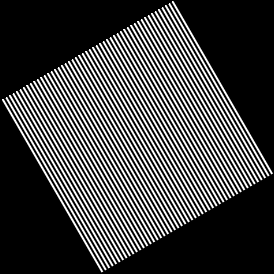

Art contest Submission: Macron in a swirl
swirl GIF of Emmanuel Macon, my current president
Images are produced by running the script ./macronGifScriptthe images were then turned into a GIF with GifMaker
The swirlStrength factor need to be changed in the function from 1.0 to 0.1 in order for the GIF to be recreated

GIF Submission: rotation
GIF rotates 5 degrees for one full rotation
The images are produced by running the script ./rotateGifScript the images were then turned into a GIF with GifMaker

Fun filter: swirl
Run with command: ./Bin/Linux/Assignment1 --in leisenb5_HTML/TEST_IMAGES/input/yoda.bmp --out leisenb5_HTML/TEST_IMAGES/output/fun.bmp --fun
Added a swirlStrength factor to change the strenght of the swirl
Original |
--fun |
AddRandomNoise
Uses helper function RandomFloat to add random noise to image
Run with command: ./Bin/Linux/Assignment1 --in leisenb5_HTML/TEST_IMAGES/input/yoda.bmp --out leisenb5_HTML/TEST_IMAGES/output/noise1.bmp --noisify 0
 |
|||
Original |
--noisify 0 |
--noisify 0.5 |
--noisify 1 |
Brighten
This function, like many others uses a helper method that limits pixels from having > 255 or < 0 values
Run with command: ./Bin/Linux/Assignment1 --in leisenb5_HTML/TEST_IMAGES/input/yoda.bmp --out leisenb5_HTML/TEST_IMAGES/output/bright1.bmp --brighten .5
 |
 |
||
Original |
--brighten .5 |
--brighten 1 |
--brighten 2 |
Luminance
Run with command: ./Bin/Linux/Assignment1 --in leisenb5_HTML/TEST_IMAGES/input/shrek.bmp --out leisenb5_HTML/TEST_IMAGES/output/contrast.5.bmp --contrast .5
 |
 |
 |
 |
Original |
--contrast .5 |
--contrast 1 |
--contrast 2 |
Contrast
Run with command: ./Bin/Linux/Assignment1 --in leisenb5_HTML/TEST_IMAGES/input/shrek.bmp --out leisenb5_HTML/TEST_IMAGES/output/sat.5.bmp --saturate .5
|
 |
||
Original |
--saturate .5 |
--saturate 1 |
--saturate 2 |
Edge detection
Run with command: ./Bin/Linux/Assignment1 --in leisenb5_HTML/TEST_IMAGES/input/sully.bmp --out leisenb5_HTML/TEST_IMAGES/output/edges.bmp --edges3x3
 |
|
Original |
--edges3x3 |
Blur
Run with command: ./Bin/Linux/Assignment1 --in leisenb5_HTML/TEST_IMAGES/input/sully.bmp --out leisenb5_HTML/TEST_IMAGES/output/blur.bmp --blur3x3
|
|
Original |
--blur3x3 |
Blur
Run with command: ./Bin/Linux/Assignment1 --in leisenb5_HTML/TEST_IMAGES/input/shrek.bmp --out leisenb5_HTML/TEST_IMAGES/output/gray.bmp --gray
|
|
Original |
--gray |
Quantize
Run with command: ./Bin/Linux/Assignment1 --in leisenb5_HTML/TEST_IMAGES/input/ramp.bmp --out leisenb5_HTML/TEST_IMAGES/output/quant1.bmp --quantize 1
 |
 |
 |
|
Original |
--quantize 1 |
--quantize 2 |
--quantize 4 |
rDither
Run with command: ./Bin/Linux/Assignment1 --in leisenb5_HTML/TEST_IMAGES/input/ramp.bmp --out leisenb5_HTML/TEST_IMAGES/output/rDither1.bmp --rDither 1
|
|||
Original |
--rDither 1 |
--rDither 2 |
--rDither 4 |
oDthier2x2
Run with command: ./Bin/Linux/Assignment1 --in leisenb5_HTML/TEST_IMAGES/input/ramp.bmp --out leisenb5_HTML/TEST_IMAGES/output/oDither1.bmp --oDither2x2 1
|
 |
 |
|
Original |
--oDither2x2 1 |
--oDither2x2 2 |
--oDither2x2 4 |
fsDither
Run with command: ./Bin/Linux/Assignment1 --in leisenb5_HTML/TEST_IMAGES/input/ramp.bmp --out leisenb5_HTML/TEST_IMAGES/output/fsDither1.bmp --fsDither 1
|
 |
 |
 |
Original |
--fsDither 1 |
--fsDither 2 |
--fsDither 4 |
Crop
Run with command: ./Bin/Linux/Assignment1 --in leisenb5_HTML/TEST_IMAGES/input/shrek.bmp --out leisenb5_HTML/TEST_IMAGES/output/crop1.bmp --crop 50 50 100 100
|
|||
Original |
--crop 50 50 100 100 |
--crop 0 0 600 800 |
--crop 0 200 200 300 |
scaleNearest
Run with command: ./Bin/Linux/Assignment1 --in leisenb5_HTML/TEST_IMAGES/input/stripe.2.bmp --out leisenb5_HTML/TEST_IMAGES/output/scaleNearest.7.bmp --scaleNearest .7
 |
 |
 |
|
Original |
--scaleNearest .7 |
--scaleNearest 1 |
--scaleNearest 1.3 |
scaleBilinear
Run with command: ./Bin/Linux/Assignment1 --in leisenb5_HTML/TEST_IMAGES/input/stripe.2.bmp --out leisenb5_HTML/TEST_IMAGES/output/scaleBilinear.7.bmp --scaleBilinear .7
 |
 |
||
Original |
--scaleBilinear .7 |
--scaleBilinear 1 |
--scaleBilinear 1.3 |
scaleGaussian
Run with command: ./Bin/Linux/Assignment1 --in leisenb5_HTML/TEST_IMAGES/input/stripe.2.bmp --out leisenb5_HTML/TEST_IMAGES/output/scaleGaussian.7.bmp --scaleGaussian .7
Original |
--scaleGaussian .7 |
--scaleGaussian 1 |
--scaleGaussian 1.3 |
rotate Nearest, Bilinear, Gaussian
Run with command: ./Bin/Linux/Assignment1 --in leisenb5_HTML/TEST_IMAGES/input/stripe.2.bmp --out leisenb5_HTML/TEST_IMAGES/output/rotateNearest30.bmp --rotateNearest 30
Run with command: ./Bin/Linux/Assignment1 --in leisenb5_HTML/TEST_IMAGES/input/stripe.2.bmp --out leisenb5_HTML/TEST_IMAGES/output/rotateBilinear30.bmp --rotateBilinear 30
Run with command: ./Bin/Linux/Assignment1 --in leisenb5_HTML/TEST_IMAGES/input/stripe.2.bmp --out leisenb5_HTML/TEST_IMAGES/output/rotateGaussian30.bmp --rotateGaussian 30
|  | |||
Original |
--rotateNearest 30 |
--rotateBilinear 30 |
--rotateGaussian 30 |